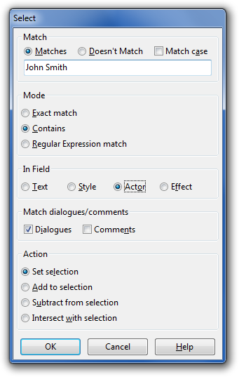

- Match
- In field
- Match dialogues/comments
- Action
The select lines tool is useful for finding and selecting all lines in the
script that matches certain criteria. This can be useful from a number of
things ranging from deleting all comment lines to finding all lines said by a
certain actor. The tool can be found in the Subtitles menu -> Select lines.

Match
These controls what criteria will be used for selecting the lines.
- Match
- Select all lines that match the criteria.
- Doesn't match
- Select all lines that don't match the criteria.
- Match case
- Controls case sensitivity, i.e. if the tool should care about the difference
between lower and upper case or not.
- Exact match
- Matches the lines that matches the given string exactly.
- Contains
- Matches the lines that contains the given string.
- Regular Expression match
- Treats the string as a regular
expression or "regex", and
matches if said expression matches. For a regular expressions tutorial, try
reading the perlretut manual page or
googling. For a reference of the exact syntax supported by Aegisub, see the
wxWidgets regular expressions reference
page.
In field
This option controls what field of each line will be used for the matching
mentioned above. Possible alternatives are:
- Text
- The body text of the line
- Style
- The line's style name
- Actor
- The actor field
- Effect
- The effect field
Here you can choose if you want to select from comment lines, dialogue lines,
or both.
Action
Decides what the tool should do with the lines that matches the given criteria.
You can choose between:
- Set selection
- Your current selection will be discarded and all lines in the script matching
the criteria will be selected instead.
- Add to selection
- Adds all lines in the script that matches the criteria to your current
selection.
- Subtract from selection
- Deselects all currently selected lines that match the criteria.
- Intersect with selection
- Does the inverse of subtract from selection. That is to say, all lines in the
current selection that matches the criteria are kept selected, but everything
else is deselected.